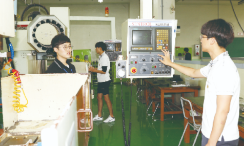

1. 학과 소개
메카트로닉스 기술은 현대 산업사회를 유지하는 핵심기술이며, 공장자동화, 사무자동화, 가정자동화 등 사회 전반의
자동화를 위하여 다양하게 응용되고 있다.
자동화는 모든 생산방식에 응용되고, 인터넷 기반의 FMS(유연생산시스템)에서 VMS(가상생산시스템)으로 변화하고
있으며, 무인화 공장이 보편화되고 있다. 이에 부응하여 메카트로닉스가 산업 전반의 중심축이 될 것이다.
미래산업을 주도할 자동화생산시스템의 중심축인 기계, 전기전자 기술을 융합한 메카트로닉스 기술 및 정보 기술 교육을
통해 창의적인 제품의 개발 및 자동생산시스템의 설계 능력을 배양한다.
2. 전공 과목
공업입문, 기초제도, 정보기술기초, 전자기계공작, 생산자동화기계, 자동화설비, 전문제도, 전기회로, 프로그래밍,
사무자동화실무
3. 실습내용
기초제도, 기계요소설계, 기계기초공작, 기계수동조립, 자동화설비, 전자기계이론, 전자기계제어, 전자기계회로,
프로그래밍, 컴퓨터활용생산
4. 취득 자격증
생산자동화기능사, 컴퓨터응용밀링기능사, 컴퓨터응용선반기능사, 전자기기기능사
5. 출처
-
경기기계공업고등학교 홈페이지